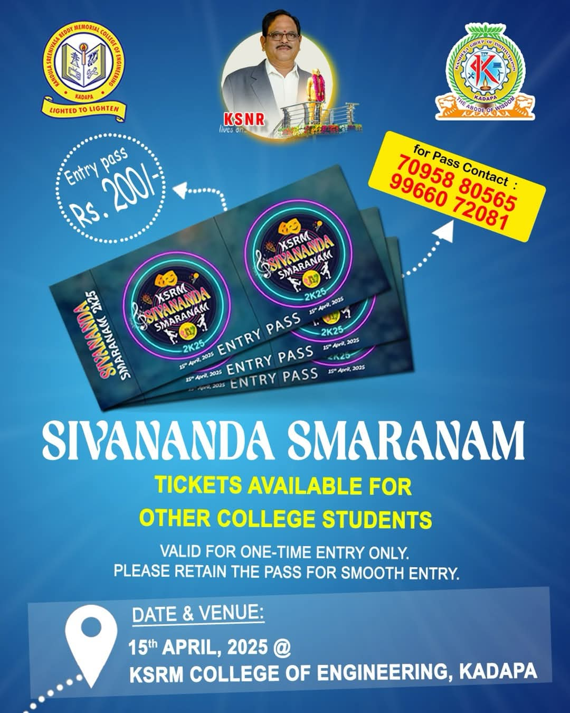

Sivananda Smaranam – Cultural Fest Entry Pass
KSRM College of Engineering presents Sivananda Smaranam 2K25, a colorful cultural evening inviting students from other colleges to participate and celebrate.
🎟️ Entry Pass: ₹200
✅ Valid for one-time entry only
🧾 Please retain the pass for smooth entry
Date & Venue:
15th April, 2025
KSRM College of Engineering, Kadapa
For Passes, Contact:
📞 70958 80565
📞 99660 72081
Don't miss out on the vibrant celebrations, music, dance, and cultural festivities!